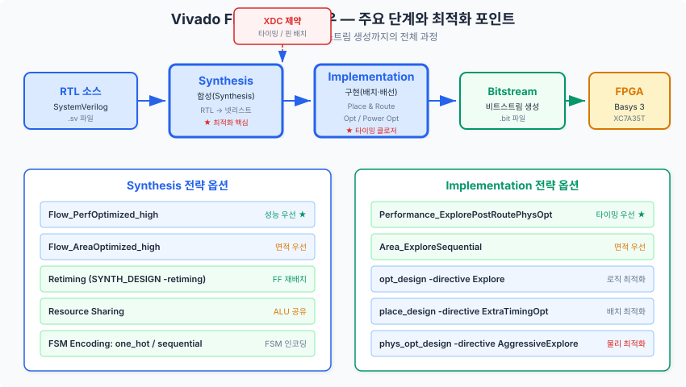
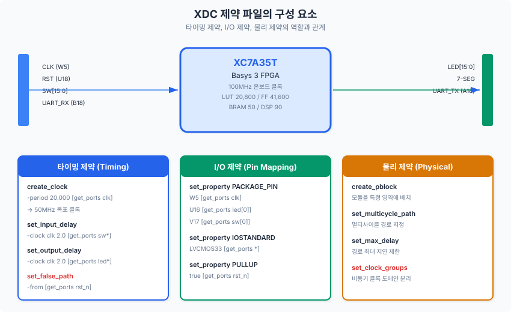
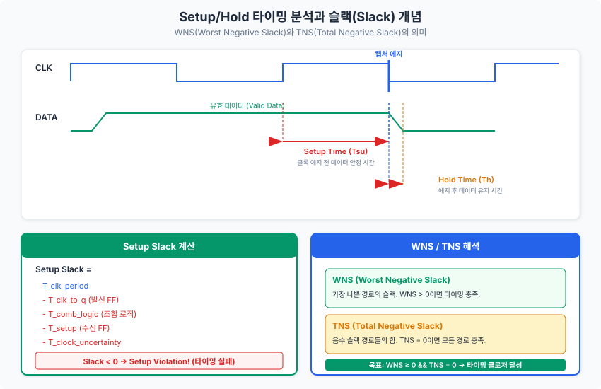
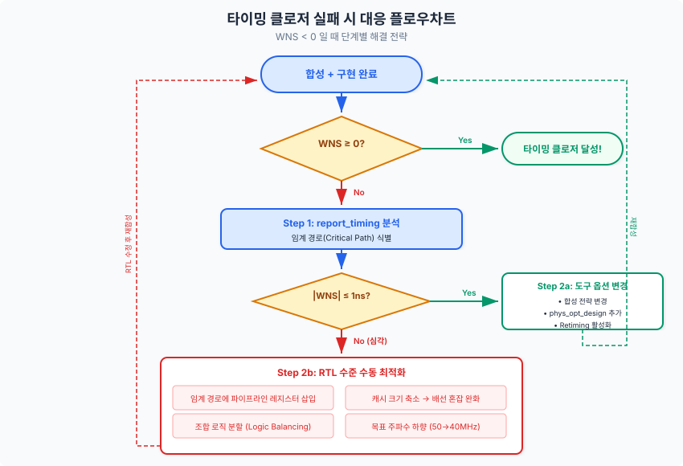
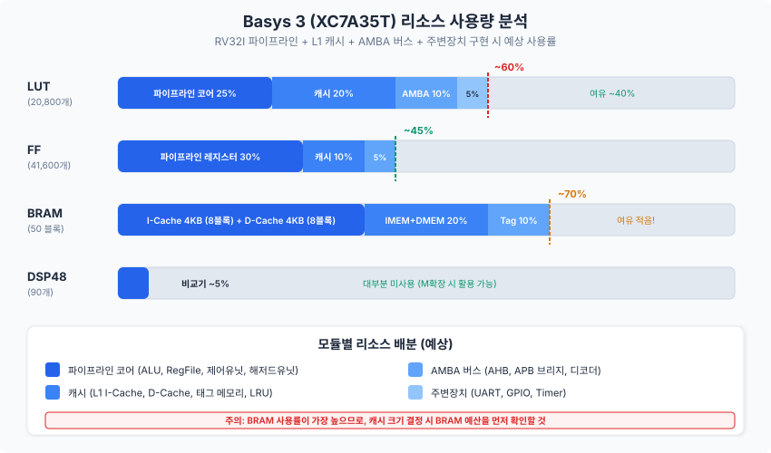

시뮬레이션에서 완벽하게 동작하던 RV32I 파이프라인 프로세서를 실제 FPGA에 올리려면, 합성(Synthesis)과 구현(Implementation)이라는 새로운 관문을 통과해야 합니다. 이 챕터에서는 Vivado의 합성 전략을 이해하고, XDC 제약 파일을 작성하며, 타이밍 분석(Timing Analysis)을 수행하여 Basys 3에서 50MHz 동작을 달성하는 전 과정을 다룹니다.
Chapter 19까지 우리는 RV32I 파이프라인 프로세서, L1 캐시, AMBA 버스, 주변 장치, 예외/인터럽트 처리까지 모두 설계하고 시뮬레이션으로 검증하였습니다. 이제 이 설계를 실제 FPGA 하드웨어에서 동작시켜야 합니다. 그 첫 번째 단계가 바로 합성(Synthesis)입니다.
합성은 RTL(Register-Transfer Level) 코드를 FPGA의 기본 구성 요소인 LUT(Look-Up Table), FF(Flip-Flop), BRAM(Block RAM), DSP48E1 등으로 변환하는 과정입니다. 이 과정에서 합성 도구(Vivado Synthesis)는 코드의 의도를 해석하고, 가능한 한 효율적인 하드웨어 구조로 매핑(mapping)합니다.
Vivado에서 RTL 소스가 비트스트림(Bitstream)이 되기까지는 크게 네 단계를 거칩니다.

Vivado는 다양한 합성 전략(Synthesis Strategy)을 제공합니다. Vivado GUI의 Settings → Synthesis → Strategy에서 선택하거나, Tcl 명령으로 직접 지정할 수 있습니다. 우리 프로젝트에서 주로 고려할 전략은 다음과 같습니다.
| 전략 | 설명 | 적용 시나리오 |
|---|---|---|
Vivado Synthesis Defaults |
기본 설정. 면적과 성능의 균형을 추구 | 첫 합성 시 기준점 확보 |
Flow_PerfOptimized_high |
성능(속도) 최적화 우선. 더 많은 LUT를 사용하더라도 타이밍을 개선 | 타이밍 위반이 발생할 때 |
Flow_AreaOptimized_high |
면적(리소스) 최적화 우선. LUT 사용량을 최소화 | 리소스 부족 시 |
Flow_AreaOptimized_medium |
중간 수준의 면적 최적화 | 면적과 성능 모두 중요할 때 |
리타이밍(Retiming)은 합성 도구가 레지스터(FF)의 위치를 조합 로직 경계에서 자동으로 이동시켜 타이밍을 개선하는 기법입니다. 예를 들어, 한 경로에 조합 로직이 밀집되어 있고 다른 경로에는 여유가 있을 때, 레지스터를 조합 로직 쪽으로 이동시켜 두 경로의 지연을 균등하게 만듭니다.
Vivado에서 리타이밍을 활성화하려면 다음 Tcl 명령을 사용합니다.
# Vivado Tcl 콘솔에서 실행
# 합성 시 리타이밍 활성화
synth_design -top fpga_top -part xc7a35tcpg236-1 -retiming
# 또는 프로젝트 설정에서:
set_property STEPS.SYNTH_DESIGN.ARGS.RETIMING true [get_runs synth_1]리소스 공유(Resource Sharing)는 서로 다른 시점에 사용되는 동일 유형의 연산기를 하나로 통합하는 최적화 기법입니다. 예를 들어, 멀티플렉서의 서로 다른 분기에서 각각 가산기를 사용하는 경우, 합성 도구가 이를 하나의 가산기와 입력 멀티플렉서 조합으로 변환할 수 있습니다.
// 리소스 공유 전: 가산기 2개 사용
assign result = sel ? (c + d) : (a + b);
// 리소스 공유 후: 가산기 1개 + MUX
// (합성 도구가 자동으로 변환하거나, 설계자가 명시적으로 작성)
assign op1 = sel ? c : a;
assign op2 = sel ? d : b;
assign result = op1 + op2;Vivado에서 리소스 공유를 제어하려면 다음 속성을 사용합니다.
# 리소스 공유 활성화 (기본값)
set_property STEPS.SYNTH_DESIGN.ARGS.RESOURCE_SHARING auto [get_runs synth_1]
# 리소스 공유 비활성화 (타이밍 우선 시)
set_property STEPS.SYNTH_DESIGN.ARGS.RESOURCE_SHARING off [get_runs synth_1]우리 설계에는 여러 FSM(유한 상태 기계, Finite State Machine)이 포함되어 있습니다. 캐시 미스 처리 FSM, AHB-to-APB 브리지 FSM, 인터럽트 처리 FSM 등이 대표적입니다. Vivado는 FSM을 감지하면 자동으로 인코딩 방식을 결정하지만, 설계자가 명시적으로 지정할 수도 있습니다.
| 인코딩 방식 | 상태 수 N일 때 FF 수 | 장점 | 단점 |
|---|---|---|---|
| One-Hot | N개 | 전이 로직 간단, 속도 우수 | FF 소모량 많음 |
| Sequential(Binary) | log₂(N)개 | FF 절감 | 디코딩 로직 복잡 |
| Gray | log₂(N)개 | 인접 전이 시 1비트만 변경 | 비순차 전이에 비효율 |
// FSM 인코딩을 합성 속성으로 지정하는 방법
(* fsm_encoding = "one_hot" *)
typedef enum logic [4:0] {
S_IDLE = 5'b00001,
S_COMPARE = 5'b00010,
S_ALLOCATE= 5'b00100,
S_WRITEBACK=5'b01000,
S_FILL = 5'b10000
} cache_state_t;프로젝트 규모가 커지면, GUI에서 매번 설정을 바꾸는 것보다 Tcl 스크립트로 합성 과정을 자동화하는 것이 효율적입니다. 아래는 우리 프로젝트에 적합한 합성 자동화 스크립트의 핵심 부분입니다.
# -------------------------------------------------------
# Vivado 합성 자동화 스크립트 (비프로젝트 모드)
# -------------------------------------------------------
# 1. 소스 파일 읽기
read_verilog -sv [glob ../rtl/*.sv]
# 2. XDC 제약 파일 읽기
read_xdc ../constraints/basys3_timing.xdc
# 3. 합성 실행 (성능 최적화 + 리타이밍)
synth_design -top fpga_top -part xc7a35tcpg236-1 \
-retiming \
-directive PerformanceOptimized
# 4. 합성 후 리포트 생성
report_utilization -file reports/post_synth_util.rpt
report_timing_summary -file reports/post_synth_timing.rpt
# 5. 구현 (배치·배선)
opt_design -directive Explore
place_design -directive ExtraTimingOpt
phys_opt_design -directive AggressiveExplore
route_design -directive AggressiveExplore
# 6. 구현 후 리포트
report_utilization -file reports/post_impl_util.rpt
report_timing_summary -file reports/post_impl_timing.rpt
report_timing -max_paths 10 -file reports/critical_paths.rpt
# 7. 비트스트림 생성
write_bitstream -force output/fpga_top.bit합성 도구가 아무리 뛰어나더라도, 목표를 알려주지 않으면 최적화할 수 없습니다. "이 설계가 50MHz에서 동작해야 한다", "이 핀에 클록이 들어온다", "이 경로는 타이밍 분석에서 제외해도 된다" 등의 정보를 합성 도구에 전달하는 것이 바로 제약 파일(Constraint File)의 역할입니다. Vivado에서는 XDC(Xilinx Design Constraints) 형식을 사용합니다.

XDC 제약은 크게 세 가지 범주로 나뉩니다.
가장 중요한 제약은 클록 정의입니다. 합성 도구는 이 제약을 기준으로 모든 레지스터 간 경로의 타이밍을 검사합니다.
# Basys 3 온보드 100MHz 클록 정의
create_clock -name sys_clk -period 10.000 [get_ports { clk_100mhz }]
# 의미 분석:
# -name sys_clk : 이 클록의 이름을 "sys_clk"으로 지정
# -period 10.000 : 클록 주기 10ns (= 100MHz)
# [get_ports ...] : 클록이 입력되는 포트를 지정우리 설계에서는 100MHz 온보드 클록을 MMCM(Mixed-Mode Clock Manager) 또는 간단한 분주기를 통해 50MHz로 변환합니다. MMCM을 사용하는 경우 Vivado가 자동으로 생성 클록(Generated Clock)을 추론하지만, 수동 분주기를 사용하는 경우 명시적으로 정의해야 합니다.
# 수동 분주기 사용 시 생성 클록 정의
create_generated_clock -name cpu_clk \
-source [get_ports clk_100mhz] \
-divide_by 2 \
[get_pins u_clk_wiz/clk_div2_reg/Q]FPGA 외부에서 들어오는 입력 신호와 외부로 나가는 출력 신호에 대해서도 타이밍을 정의해야 합니다. set_input_delay와 set_output_delay를 사용합니다.
# UART 입력: 클록 대비 최대 3ns 지연으로 도착
set_input_delay -clock sys_clk -max 3.0 [get_ports { uart_rxd }]
set_input_delay -clock sys_clk -min 0.0 [get_ports { uart_rxd }]
# UART 출력: 클록 에지 후 최대 3ns 이내에 안정화
set_output_delay -clock sys_clk -max 3.0 [get_ports { uart_txd }]
set_output_delay -clock sys_clk -min 0.0 [get_ports { uart_txd }]거짓 경로(False Path)는 타이밍 분석에서 제외해야 하는 경로입니다. 가장 대표적인 예가 비동기 리셋 신호와 비동기 입력(스위치, 버튼)입니다. 이 신호들은 클록과 동기화되지 않으므로, 타이밍 분석에 포함하면 불필요한 위반(violation)이 보고됩니다.
# 비동기 리셋: 타이밍 분석에서 제외
set_false_path -from [get_ports { rst_n }]
# 슬라이드 스위치: 비동기 입력
set_false_path -from [get_ports { sw[*] }]
# LED 출력: 사람이 관찰하므로 타이밍 무관
set_false_path -to [get_ports { led[*] }]Basys 3 보드의 각 핀에 대해 PACKAGE_PIN(물리적 핀 번호)과 IOSTANDARD(전기적 표준)를 지정해야 합니다. Basys 3는 3.3V 로직을 사용하므로 LVCMOS33을 표준으로 사용합니다.
# 클록 핀 설정
set_property -dict { PACKAGE_PIN W5 IOSTANDARD LVCMOS33 } [get_ports { clk_100mhz }]
# LED[0] 핀 설정
set_property -dict { PACKAGE_PIN U16 IOSTANDARD LVCMOS33 } [get_ports { led[0] }]
# 스위치[0] 핀 설정
set_property -dict { PACKAGE_PIN V17 IOSTANDARD LVCMOS33 } [get_ports { sw[0] }]
# 리셋 버튼 (풀업 저항 활성화)
set_property -dict { PACKAGE_PIN U18 IOSTANDARD LVCMOS33 } [get_ports { rst_n }]
set_property PULLUP true [get_ports { rst_n }]비트스트림 생성 시 적용할 설정도 XDC에 포함합니다. 특히 압축(Compress) 옵션은 비트스트림 파일 크기를 줄여 프로그래밍 시간을 단축합니다.
# 전원 전압 설정
set_property CFGBVS VCCO [current_design]
set_property CONFIG_VOLTAGE 3.3 [current_design]
# 비트스트림 압축 활성화
set_property BITSTREAM.GENERAL.COMPRESS TRUE [current_design]합성과 구현이 완료되면, 이제 가장 중요한 질문에 답해야 합니다. "이 설계가 목표 주파수에서 정상 동작할 수 있는가?" 이 질문에 답하는 과정이 바로 정적 타이밍 분석(STA, Static Timing Analysis)입니다.
디지털 회로에서 플립플롭(FF)이 데이터를 올바르게 캡처하려면, 두 가지 조건이 충족되어야 합니다.

이 두 조건 중 하나라도 위반되면, 플립플롭은 메타스테이빌리티(Metastability) 상태에 빠져 출력이 불확정(0도 1도 아닌 중간 전압)이 됩니다. 이는 시뮬레이션에서는 절대 나타나지 않지만, 실제 FPGA에서는 간헐적인 오동작으로 나타나 디버깅이 극히 어렵습니다.
슬랙(Slack)은 타이밍 여유를 나타내는 핵심 지표입니다. 셋업 슬랙을 수식으로 표현하면 다음과 같습니다.
Setup Slack = T_clk_period
- T_clk_to_q (발신 FF의 출력 지연)
- T_comb_logic (조합 로직 전파 지연)
- T_setup (수신 FF의 셋업 시간)
- T_clock_uncertainty (클록 불확실성)Vivado는 수만 개의 타이밍 경로를 분석한 뒤, 두 가지 핵심 지표를 보고합니다.
| 지표 | 의미 | 목표 |
|---|---|---|
| WNS (Worst Negative Slack) | 모든 경로 중 가장 나쁜(가장 작은) 슬랙 값 | WNS ≥ 0 |
| TNS (Total Negative Slack) | 음수 슬랙을 가진 모든 경로의 슬랙 합 | TNS = 0 |
| WHS (Worst Hold Slack) | 홀드 타이밍의 최악 슬랙 | WHS ≥ 0 |
| THS (Total Hold Slack) | 음수 홀드 슬랙의 합 | THS = 0 |
타이밍 클로저(Timing Closure)란 WNS ≥ 0 이고 TNS = 0인 상태, 즉 모든 경로가 타이밍 요구사항을 만족하는 상태를 달성하는 것을 말합니다.
Vivado에서 타이밍 분석 결과를 확인하는 핵심 명령은 report_timing과 report_timing_summary입니다.
# 전체 타이밍 요약 보고서
report_timing_summary
# 상위 10개 임계 경로 상세 보고
report_timing -max_paths 10 -sort_by slack
# 특정 클록 도메인의 타이밍만 확인
report_timing -from [get_clocks cpu_clk] -to [get_clocks cpu_clk] -max_paths 5
# 특정 모듈을 통과하는 경로 확인
report_timing -through [get_cells u_soc/u_cpu/u_alu/*] -max_paths 5다음은 report_timing 출력의 핵심 부분을 읽는 방법입니다.
Slack (MET) : 1.234ns (required time - arrival time)
Source: u_cpu/ex_mem_reg/alu_result_reg[15]/C
(rising edge-triggered flip-flop clocked by cpu_clk)
Destination: u_cpu/mem_wb_reg/wb_data_reg[15]/D
(rising edge-triggered flip-flop clocked by cpu_clk)
Path Group: cpu_clk
Path Type: Setup (Max at Slow Process Corner)
Requirement: 20.000ns (cpu_clk rise@20.000ns - cpu_clk rise@0.000ns)
Data Path Delay: 17.856ns (logic 8.234ns + route 9.622ns)
Logic Levels: 12 (LUT6=8 CARRY4=3 MUXF7=1)
Clock Uncertainty: 0.035ns이 보고서에서 핵심적으로 확인해야 할 항목은 다음과 같습니다.
타이밍 위반이 발생했을 때, 해결 전략은 위반의 심각도에 따라 다릅니다.

도구 옵션 변경만으로 해결 가능한 경우가 많습니다.
Flow_PerfOptimized_high로 변경phys_opt_design -directive AggressiveExploresynth_design -retimingplace_design -directive ExtraTimingOptRTL 수준의 수정이 필요합니다.
// 임계 경로 분할 예제: EX 스테이지의 긴 조합 로직
// [수정 전] 분기 비교 + 타겟 주소 계산이 한 사이클에 완료
assign branch_taken = (rs1_data == rs2_data); // 비교기
assign branch_target = pc_ex + imm_ex; // 가산기
// [수정 후] 비교 결과를 1사이클 일찍 계산 (ID 스테이지로 이동)
// 이 경우 포워딩 로직도 함께 수정해야 함 (Ch11 참조)
always_ff @(posedge clk) begin
branch_taken_reg <= (rs1_data_fwd == rs2_data_fwd);
end타이밍 클로저와 함께 FPGA 설계에서 반드시 관리해야 하는 또 다른 축이 리소스 사용량(Resource Utilization)입니다. Basys 3의 XC7A35T는 교육용 FPGA로서 리소스가 제한적이므로, 우리 설계가 칩 안에 들어갈 수 있는지 사전에 확인하고 필요시 최적화해야 합니다.
먼저 우리가 사용하는 FPGA 칩의 정확한 리소스를 확인합시다.
| 리소스 | 수량 | 용도 |
|---|---|---|
| Slice LUT | 20,800개 | 조합 로직, 소규모 메모리(LUTRAM) |
| Slice FF (Flip-Flop) | 41,600개 | 레지스터, 파이프라인 스테이지 |
| BRAM (36Kb Block) | 50개 | 캐시, 명령어/데이터 메모리, FIFO |
| DSP48E1 | 90개 | 곱셈기, MAC 연산 (RV32I에서는 거의 미사용) |
| IOB (I/O Block) | 106개 | 외부 핀 연결 |

우리 설계의 각 모듈이 소비하는 리소스를 예측하면 다음과 같습니다.
| 모듈 | LUT (예상) | FF (예상) | BRAM (예상) | 비고 |
|---|---|---|---|---|
| 파이프라인 코어 | ~5,000 (24%) | ~12,000 (29%) | 0 | ALU, RegFile(LUTRAM), 해저드 유닛 |
| L1 I-Cache (4KB, DM) | ~800 (4%) | ~200 (0.5%) | 8 | 태그 비교기, Valid 비트 |
| L1 D-Cache (4KB, 2-way) | ~1,500 (7%) | ~400 (1%) | 10 | Dirty 비트, LRU, Write-Back 로직 |
| IMEM + DMEM | ~100 (0.5%) | ~50 (0.1%) | 10 | 명령어/데이터 메모리 |
| AHB 인터커넥트 | ~800 (4%) | ~600 (1.5%) | 0 | 디코더, 멀티플렉서, 아비터 |
| APB 브리지 + 주변장치 | ~1,200 (6%) | ~800 (2%) | 2 | UART FIFO, GPIO, Timer |
| CSR + 예외/인터럽트 | ~600 (3%) | ~500 (1.2%) | 0 | CSR 레지스터, 트랩 로직 |
| 클록 + 리셋 + 기타 | ~200 (1%) | ~100 (0.2%) | 0 | 클록 분주, 리셋 동기화 |
| 합계 | ~10,200 (49%) | ~14,650 (35%) | 30 (60%) |
위 예측에서 LUT 사용률은 약 49%, BRAM은 약 60%입니다. LUT와 FF는 여유가 있지만, BRAM이 가장 제약적인 리소스입니다. 캐시 크기를 늘리고 싶어도 BRAM 예산이 제한하는 상황입니다.
FPGA 설계에서는 항상 면적(Area)과 속도(Speed)가 상충합니다. 이 트레이드오프를 이해하고 설계 결정에 반영하는 것이 핵심입니다.
| 최적화 방향 | 면적 영향 | 속도 영향 | 예 |
|---|---|---|---|
| 파이프라인 레지스터 추가 | FF ↑ | 클록 주파수 ↑ | EX 스테이지 분할 |
| 리소스 공유 | LUT ↓ | MUX 추가로 약간 ↓ | 가산기 공유 |
| 캐시 연관도 증가 | LUT ↑, BRAM ↑ | 미스율 ↓ → 성능 ↑ | DM → 2-way SA |
| One-hot FSM 인코딩 | FF ↑ | 전이 로직 ↓ → 속도 ↑ | 캐시 FSM |
| BRAM → LUTRAM 변환 | LUT ↑, BRAM ↓ | 비동기 읽기 가능 | 레지스터 파일 |
리소스 최적화에서 가장 중요한 것은 BRAM 추론(BRAM Inference)을 올바르게 유도하는 것입니다. Vivado가 코드를 BRAM으로 추론하려면 특정 코딩 패턴을 따라야 합니다.
// ★ BRAM 추론 가능: 동기 읽기 + 동기 쓰기 (Read-First 모드)
always_ff @(posedge clk) begin
if (we)
mem[addr] <= din;
dout <= mem[addr]; // 동기 읽기 → BRAM 추론
end
// ✗ BRAM 추론 불가: 비동기 읽기
// (LUTRAM으로 합성됨 → LUT 소모량 급증)
assign dout = mem[addr]; // 비동기 읽기 → LUTRAMBRAM과 LUTRAM의 차이를 정리하면 다음과 같습니다.
| 특성 | BRAM | LUTRAM (분산 RAM) |
|---|---|---|
| 용량 | 36Kb / 블록 | 64비트 / LUT |
| 읽기 방식 | 동기 읽기만 가능 | 비동기 읽기 가능 |
| 소비 리소스 | 전용 BRAM 블록 | Slice LUT |
| 적합한 용도 | 캐시 데이터, 메모리, FIFO | 레지스터 파일, 소규모 테이블 |
| 접근 지연 | 1사이클 | 조합 지연만 |
합성 또는 구현 후, report_utilization 명령으로 실제 리소스 사용량을 확인합니다.
# 리소스 사용량 보고서 생성
report_utilization -file reports/utilization.rpt
# 계층별(모듈별) 사용량 확인
report_utilization -hierarchical -file reports/hier_util.rpt보고서의 핵심 부분은 다음과 같은 형태입니다.
+----------------------------+------+-------+-----------+-------+
| Site Type | Used | Fixed | Available | Util% |
+----------------------------+------+-------+-----------+-------+
| Slice LUTs | 10234| 0 | 20800 | 49.20%|
| LUT as Logic | 9876| 0 | 20800 | 47.48%|
| LUT as Memory (LUTRAM) | 358| 0 | 9600 | 3.73%|
| Slice Registers | 14680| 0 | 41600 | 35.29%|
| Block RAM Tile | 30| 0 | 50 | 60.00%|
| DSPs | 0| 0 | 90 | 0.00%|
+----------------------------+------+-------+-----------+-------+여기서 주의해야 할 점은 Util%가 80%를 넘으면 배치·배선 도구가 최적의 위치를 찾기 어려워져 타이밍 성능이 급격히 저하된다는 것입니다. 따라서 LUT 사용률 70% 이하, BRAM 사용률 80% 이하를 목표로 관리하는 것이 바람직합니다.
이제 실제로 우리의 RV32I 파이프라인 프로세서를 Basys 3에 합성한 결과를 분석합니다. 이 절에서는 50MHz 목표에 대한 합성 결과를 검토하고, 타이밍 위반이 발생한 경우의 대응 전략을 구체적으로 다룹니다.
| 항목 | 목표 | 비고 |
|---|---|---|
| 동작 주파수 | 50MHz (주기 20ns) | Artix-7 최대 ~450MHz 대비 보수적 목표 |
| WNS | ≥ 0ns | 모든 셋업 경로 충족 |
| LUT 사용률 | ≤ 70% | 배치 여유 확보 |
| BRAM 사용률 | ≤ 80% | 캐시 + 메모리 합산 |
Vivado에서 합성과 구현을 실행한 후, 다음과 같은 결과를 얻을 수 있습니다. 아래는 대표적인 합성 결과의 예시입니다.
================================
Timing Summary (Post-Implementation)
================================
WNS(setup): 1.876ns → 타이밍 충족 ✓
TNS(setup): 0.000ns → 모든 경로 충족 ✓
WHS(hold): 0.089ns → 홀드 충족 ✓
THS(hold): 0.000ns → 홀드 충족 ✓
Total Negative Endpoints: 0
Target Clock: cpu_clk (50MHz, period = 20.000ns)
================================
Resource Utilization
================================
Slice LUTs: 10,234 / 20,800 (49.2%)
Slice Registers: 14,680 / 41,600 (35.3%)
Block RAM: 30 / 50 (60.0%)
DSP48E1: 0 / 90 ( 0.0%)
================================
Critical Path
================================
From: u_cpu/u_dcache/data_array_reg[3][127]/C
To: u_cpu/u_pipeline/mem_wb_reg/wb_data_reg[31]/D
Slack: 1.876ns
Levels of Logic: 8
Data Path Delay: 17.124ns (logic 6.8ns + route 10.324ns)이 결과에서 WNS가 1.876ns로 양수이므로 타이밍 클로저가 달성되었습니다. 임계 경로는 D-Cache 데이터 배열에서 MEM/WB 파이프라인 레지스터까지의 경로로, MEM 스테이지의 캐시 읽기 경로가 가장 느린 것을 확인할 수 있습니다.
시뮬레이션과 FPGA 사이에서 불일치가 발생하는 대표적인 원인과 해결책을 정리합니다.
| # | 불일치 원인 | 증상 | 해결책 |
|---|---|---|---|
| 1 | 초기화 미비 | 시뮬레이션에서는 X가 0으로 처리되지만, FPGA에서는 임의의 값 | 모든 레지스터에 명시적 리셋 값 할당 |
| 2 | 래치(Latch) 추론 | always_comb에서 모든 분기를 커버하지 않으면 래치 생성 |
합성 경고에서 "inferred latch" 검색, default 분기 추가 |
| 3 | 비동기 리셋 해제 | 리셋 해제 시점이 클록 에지와 겹쳐 메타스테이빌리티 발생 | 2단 동기화기(sync_reset 모듈) 사용 |
| 4 | 클록 도메인 교차 | 서로 다른 클록 도메인 간 신호 전달 시 데이터 손실 | 2단 동기화기 또는 비동기 FIFO 사용 |
| 5 | 타이밍 위반 | 간헐적 오동작, 온도/전압에 따라 달라지는 증상 | 타이밍 클로저 달성 확인, WNS/TNS 점검 |
| 6 | 블로킹/논블로킹 할당 혼용 | 시뮬레이션과 합성에서 다른 순서로 실행 | 순차 로직은 <=, 조합 로직은 = 엄수 |
| 7 | BRAM 초기화 누락 | 명령어 메모리가 비어 있어 CPU가 유효하지 않은 명령어 실행 | COE 파일로 BRAM 초기화, $readmemh는 시뮬레이션 전용 |
FPGA에서 설계가 동작하지 않을 때, 다음 체크리스트를 순서대로 점검하십시오.
report_timing_summary에서 WNS ≥ 0, TNS = 0인지 확인합니다.sync_reset 모듈을 점검합니다.locked 출력을 LED에 연결하여 시각적으로 확인할 수 있습니다.Basys 3에 프로세서를 탑재하는 최상위 모듈의 구조를 살펴봅시다. 이 모듈은 클록 생성, 리셋 동기화, CPU 코어 인스턴스화를 담당합니다.
module fpga_top (
input logic clk_100mhz, // Basys 3 100MHz 온보드 클록
input logic rst_n, // Center Button (액티브 로우)
input logic [15:0] sw, // 슬라이드 스위치
output logic [15:0] led, // LED
input logic uart_rxd, // UART 수신
output logic uart_txd // UART 송신
);
logic clk_cpu; // 50MHz CPU 클록
logic pll_locked; // PLL 잠금 상태
logic rst_sync_n; // 동기화된 리셋
// 1단계: 클록 생성 (100MHz → 50MHz)
clk_wizard_wrapper u_clk_wiz (
.clk_100mhz (clk_100mhz),
.rst_n (rst_n),
.clk_50mhz (clk_cpu),
.locked (pll_locked)
);
// 2단계: 리셋 동기화
sync_reset u_sync_rst (
.clk (clk_cpu),
.rst_async_n (rst_n & pll_locked),
.rst_sync_n (rst_sync_n)
);
// 3단계: CPU SoC 인스턴스
riscv_soc u_soc (
.clk (clk_cpu),
.rst_n (rst_sync_n),
.gpio_in (sw),
.gpio_out (led),
.uart_rx (uart_rxd),
.uart_tx (uart_txd)
);
endmodule// 리셋 동기화 모듈: 비동기 리셋의 안전한 해제
module sync_reset (
input logic clk,
input logic rst_async_n, // 비동기 리셋 (액티브 로우)
output logic rst_sync_n // 동기화된 리셋 (액티브 로우)
);
logic rst_meta;
(* ASYNC_REG = "TRUE" *) // Vivado 배치 최적화 힌트
always_ff @(posedge clk or negedge rst_async_n) begin
if (!rst_async_n) begin
rst_meta <= 1'b0;
rst_sync_n <= 1'b0;
end else begin
rst_meta <= 1'b1;
rst_sync_n <= rst_meta;
end
end
endmodule만약 50MHz에서 타이밍 클로저에 실패한다면, 다음 전략을 단계적으로 적용합니다.
| 단계 | 전략 | 예상 효과 | 부작용 |
|---|---|---|---|
| 1 | 합성 전략을 Flow_PerfOptimized_high로 변경 |
WNS 0.5~1.0ns 개선 | LUT 사용량 약간 증가 |
| 2 | 리타이밍 활성화 | 레지스터 재배치로 WNS 개선 | 합성 후 기능 검증 필요 |
| 3 | phys_opt_design -directive AggressiveExplore |
물리 최적화로 배선 지연 감소 | 구현 시간 증가 |
| 4 | 임계 경로 RTL 수정 (파이프라인 레지스터 삽입) | 근본적 해결 | 레이턴시 증가, 기능 재검증 |
| 5 | 캐시 크기 축소 (4KB → 2KB) | 배선 혼잡도 감소 | 캐시 미스율 증가 |
| 6 | 목표 주파수 하향 (50MHz → 40MHz) | 확실한 해결 | 성능 20% 저하 |
이 챕터에서는 RTL 설계를 실제 FPGA 하드웨어에서 동작시키기 위한 합성 최적화와 타이밍 클로저의 전 과정을 다루었습니다. 시뮬레이션에서 FPGA로 넘어가는 이 단계는 많은 설계자가 어려움을 겪는 구간이지만, 체계적인 접근과 반복적인 분석-수정 과정을 통해 반드시 달성할 수 있습니다.
Flow_PerfOptimized_high, Flow_AreaOptimized_high 등 전략에 따라 면적-속도 트레이드오프가 달라진다.create_clock), I/O 제약(set_property PACKAGE_PIN), 물리 제약(set_false_path)의 세 범주로 구성되며, 합성 품질에 결정적 영향을 미친다.report_timing에서 로직 지연과 배선 지연의 비율을 확인하여 최적화 방향을 결정한다.create_clock -name cpu_clk -period 20.000 [get_ports clk]. 이 제약이 의미하는 목표 주파수는 몇 MHz이며, -period 값을 10.000으로 변경하면 합성 결과에 어떤 영향이 있겠는가?report_timing 결과가 주어졌을 때, 이 경로의 타이밍 충족 여부를 판단하고, 가장 효과적인 최적화 방향을 제시하시오.
Slack (VIOLATED): -1.5ns
Data Path Delay: 21.5ns (logic 5.2ns + route 16.3ns)
Logic Levels: 6Flow_PerfOptimized_high로 변경, (b) EX 스테이지를 EX1/EX2로 분할하여 파이프라인을 6단으로 확장, (c) 목표 주파수를 35MHz로 하향.logic [31:0] mem [0:1023];
always_ff @(posedge clk) begin
if (we) mem[waddr] <= wdata;
end
assign rdata = mem[raddr]; // 비동기 읽기set_false_path를 UART RX 입력에 적용하면 어떤 위험이 있는지 설명하고, 대신 어떤 제약을 사용해야 하는지 제시하시오.